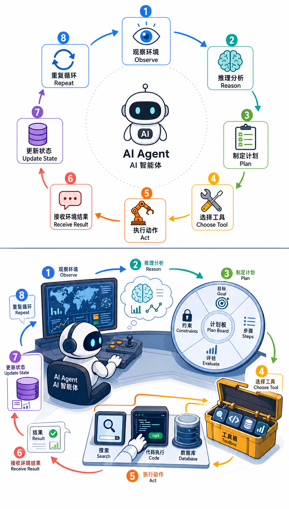

Agent 框架原理
前置知识：预训练语言模型演进（理解 LLM 的 In-Context Learning 与指令跟随能力）
本节目标：理解 AI Agent 的核心定义与架构——从最朴素的"模型即 Agent"出发，逐步引入 ReAct、Tool Use、Planning 等关键机制，建立对 Agent 系统的完整认知。
内容时效：截至 2026 年 4 月
1. 模型为什么需要动手
1.1 核心问题：模型为什么需要"动手"？
一个纯粹的 LLM 只能做一件事：给定上文，预测下一个 token。它不能查数据库、不能调 API、不能执行代码、不能浏览网页。就像一个知识渊博但被锁在房间里的专家——能回答问题，但无法亲手做任何事。
Agent 的本质就是给这个专家一双手和一双眼睛：

纯 LLM： 用户提问 → 模型生成回答 → 结束
（一次性，只靠模型内部知识）
Agent： 用户提问 → 模型思考 → 调用工具 → 观察结果 → 继续思考 → ... → 最终回答
（多步循环，利用外部工具和环境反馈）1.2 Workflow 自动化 vs 真正的 Agent
在理解 Agent 之前，需要先厘清一个容易混淆的边界：
Workflow 自动化（如 Zapier、n8n、固定的 LangChain chain）是固定流程：步骤预先编排好，每一步做什么、调用什么工具、下一步走哪里都是开发者写死的。模型只是在每个步骤中充当"生成器"，不参与流程决策。
真正的 Agent 是动态决策：面对同一个任务，Agent 可能根据中间结果选择不同的工具、调整执行顺序、甚至放弃当前路径回退重试。流程不是预定义的，而是模型在运行时自主推理出来的。
判断标准很简单：如果把 LLM 换成一个固定的 if-else 逻辑，系统还能正常运行，那它就是 workflow 自动化而非 Agent。 Agent 的价值在于处理无法预先穷举所有分支的复杂场景。
1.2 什么是 AI Agent？
AI Agent 的定义没有统一标准，但核心要素是一致的：
AI Agent 是一个以 LLM 为核心推理引擎，能够自主感知环境、制定计划、调用工具、执行行动，并根据反馈迭代调整的系统。
关键词拆解：
| 要素 | 含义 | 类比 |
|---|---|---|
| 感知（Perception） | 接收用户输入、工具返回、环境状态 | 人的眼睛和耳朵 |
| 推理（Reasoning） | 分析当前状态，决定下一步 | 人的大脑思考 |
| 规划（Planning） | 将复杂任务分解为子步骤 | 人制定工作计划 |
| 行动（Action） | 调用工具、执行代码、生成输出 | 人的双手操作 |
| 反思（Reflection） | 评估行动结果，修正策略 | 人的复盘总结 |
1.3 Agent 的核心循环
┌──────────────────────────────────────┐
│ Agent 核心循环 │
│ │
│ 感知(Perceive) │
│ │ │
│ ▼ │
│ 推理(Reason) ←── 记忆(Memory) │
│ │ │
│ ▼ │
│ 规划(Plan) │
│ │ │
│ ▼ │
│ 行动(Act) ───→ 工具/环境 │
│ │ │
│ ▼ │
│ 反思(Reflect) │
│ │ │
│ └──→ 任务完成？──否──→ 回到感知 │
│ │ │
│ 是 │
│ │ │
│ ▼ │
│ 输出最终结果 │
└──────────────────────────────────────┘2. Agent 的行动循环与工具使用
2.1 ReAct：推理与行动的交替
ReAct（Reasoning + Acting） 是 Yao et al.（2022）提出的关键框架，核心思想极其简洁：
让模型在生成行动之前先生成一段推理（Thought），行动之后观察结果（Observation），再进入下一轮推理。
ReAct 的三元组循环
Thought → Action → Observation → Thought → Action → Observation → ...
(推理) (行动) (观察) (推理) (行动) (观察)对比其他范式：
| 范式 | 过程 | 问题 |
|---|---|---|
| 纯推理（CoT） | Thought → Thought → ... → Answer | 无法获取外部信息，容易幻觉 |
| 纯行动（Act-only） | Action → Observation → Action → ... | 无目标导向，盲目试错 |
| ReAct | Thought → Action → Observation → ... | 推理指导行动，观察修正推理 |
ReAct 的 Prompt 模板
Answer the following questions as best you can. You have access to the following tools:
{tool_descriptions}
Use the following format:
Question: the input question you must answer
Thought: you should always think about what to do
Action: the action to take, should be one of [{tool_names}]
Action Input: the input to the action
Observation: the result of the action
... (this Thought/Action/Action Input/Observation can repeat N times)
Thought: I now know the final answer
Final Answer: the final answer to the original input question2.2 Tool Use（函数调用）
Tool Use 是 Agent 执行行动的核心机制。从 2023 年 OpenAI 引入 Function Calling 开始，到 2025 年已成为所有主流模型的标配能力。
工作原理
用户消息 + 工具定义（JSON Schema）
│
▼
LLM 推理
│
├── 直接回答（不需要工具）
│
└── 生成工具调用请求
│
▼
应用层执行工具
│
▼
工具返回结果
│
▼
LLM 综合结果，继续推理或回答工具定义的 JSON Schema
关键设计决策：
| 决策点 | 选项 | 权衡 |
|---|---|---|
| 工具数量 | 少量精选 vs 大量全面 | 工具越多，模型选择越困难；通常 10-20 个为宜 |
| 描述质量 | 简洁 vs 详尽 | 描述是模型选择工具的唯一依据，需要准确且有区分度 |
| 参数设计 | 简单类型 vs 复杂嵌套 | 模型对简单参数更可靠，深嵌套结构容易出错 |
| 并行调用 | 串行 vs 并行 | 2024 年起主流模型支持并行工具调用，提升效率 |
2.3 Planning：任务分解与计划生成
复杂任务需要分解为可执行的子步骤。Planning 是 Agent 从"能回答问题"到"能完成任务"的关键能力。
主流 Planning 策略
1. 预先规划（Plan-then-Execute）
用户任务 → 一次性生成完整计划 → 按步骤逐个执行
优点：全局视野，步骤清晰
缺点：无法根据中间结果动态调整2. 动态规划（Interleaved Planning）
用户任务 → 规划第一步 → 执行 → 根据结果规划下一步 → 执行 → ...
优点：灵活，能根据中间结果调整
缺点：可能陷入局部最优，缺乏全局视野3. 混合规划（Plan-and-Replan）——2025 年的主流做法
用户任务 → 生成初步计划 → 执行第一步 → 观察结果
│
需要修改计划？
├── 否 → 继续执行下一步
└── 是 → 重新规划剩余步骤2.4 Reflexion：反思与自我修正
Shinn et al.（2023）提出的 Reflexion 框架，让 Agent 能从失败中学习：
┌──────────────────────────┐
│ Episode 1 │
│ 尝试 → 失败 → 反思 │
│ "我忽略了边界条件" │
└──────────┬───────────────┘
│ 反思经验存入记忆
▼
┌──────────────────────────┐
│ Episode 2 │
│ 利用反思 → 改进 → 成功 │
└──────────────────────────┘Reflexion 的核心并非重试，而是结构化的自我反思——生成文字形式的经验教训，作为后续尝试的上下文。
时效性说明
本节内容截至 2026 年 4 月。以下内容可能快速变化：
- Function Calling 的 API 格式各厂商仍在迭代，以官方文档为准
- ReAct 作为概念框架仍有效，但具体实现方式已逐渐被原生 Tool Use 替代
- Agent 的最佳实践随模型能力提升持续演进——更强的模型需要更少的 Prompt 工程技巧